Assignment 2: CAD Model + Fabricated Output
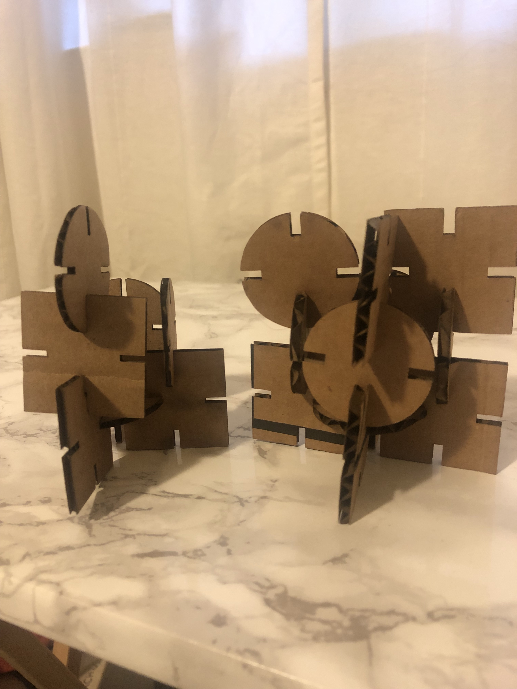
Process:
This assignment was very difficult for me because it took me a while to understand how Rhino
and Grasshopper worked. I knew I wanted to keep my shapes simple until I got the hang of Rhino
and Grasshopper.
I used Grasshopper to make circles and squares with slits to put the pieces together.
Square
I used the Construct Domain Function with number sliders to build the square from the center point
and to be able to manipulate each side of the square individually. Each domain function was added
as an X and Y input.
Once the main square was built using the Construct Domain Function, I used number sliders in the
X and Y inputs of the rectangle and connected the sliders to Multiplication function, Vector XYZ, Move
and Polar Array to make rectangles that would serve as slits. I'm able to move the number sliders on the
X value to adjust the width of the slits. Finally, I used Region Difference to trim the shape.
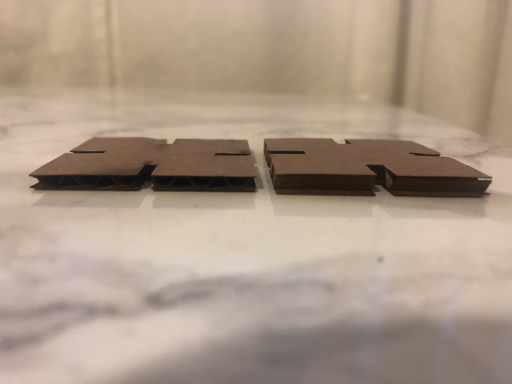
Square 1:
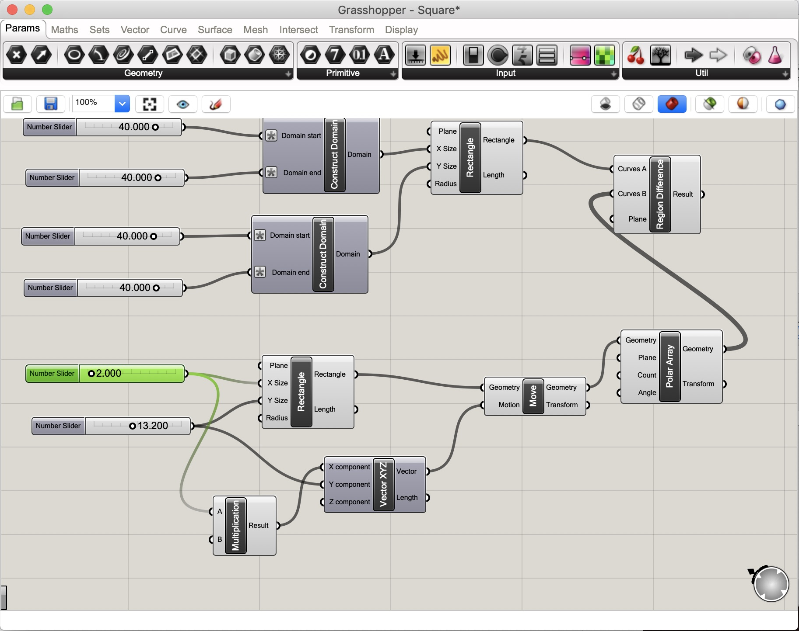
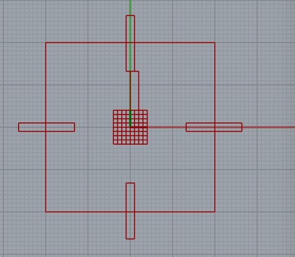
Square 2:
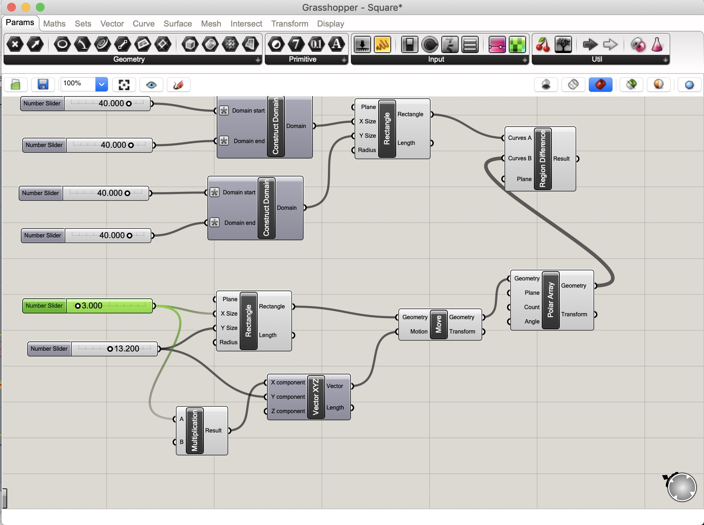
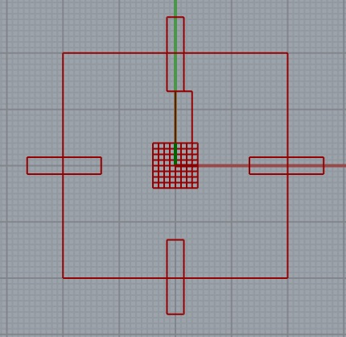
Circle
For the circle shape, I used the circle function to build it and used a number slider to set the radius.
I kept the circle build simple, but ran into some issues building in the slits. I used rectangle to build the slits
and added number sliders to the X & Y inputs. For some reason, using Domain didn't work for the circle
so I connected the Rectangle to Move and connected the X input to Multiplication, Vector XYZ and Move.
Finally, I used the polar array function to create multiple slits (I set the count to 4) and I used Region Difference to trim the shape.
Circle 1:

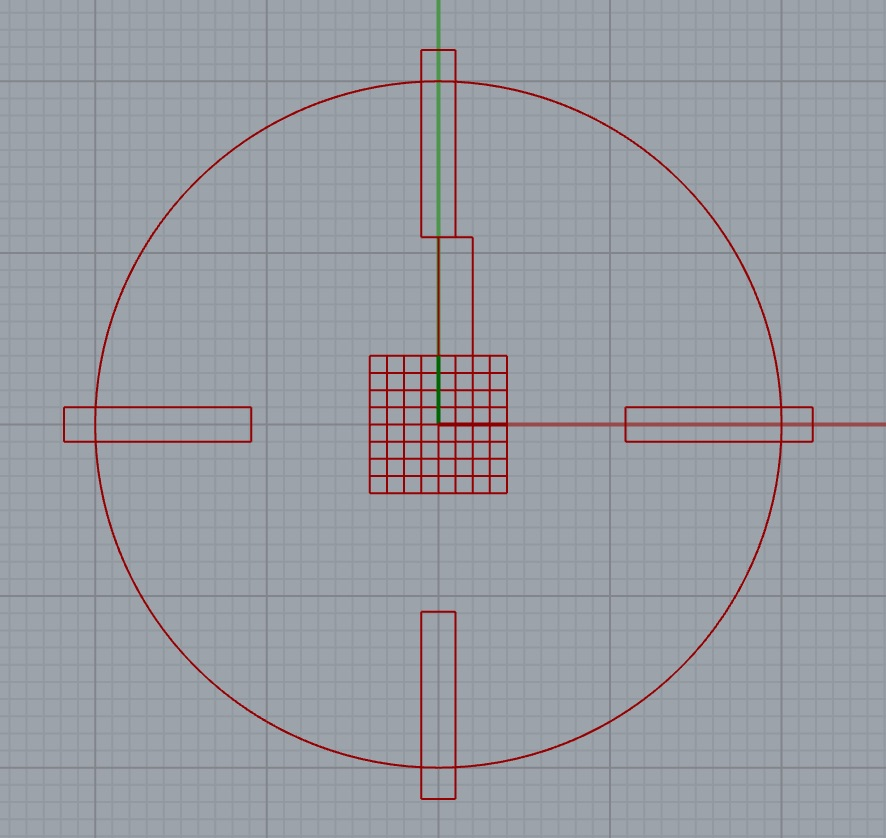
Circle 2:
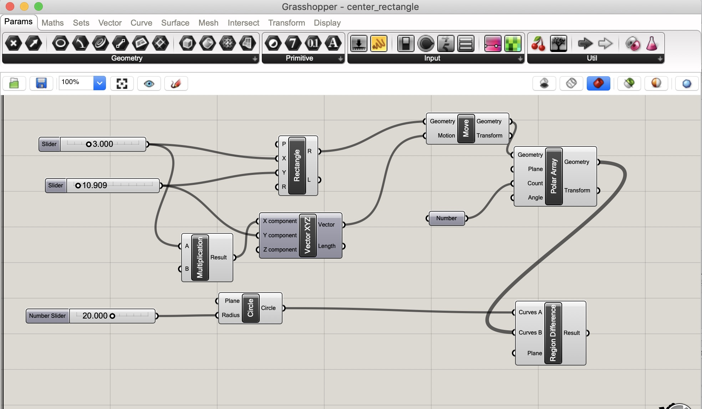
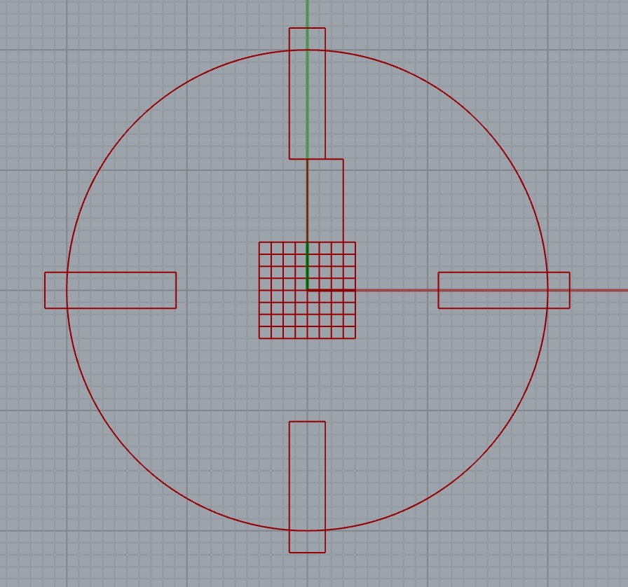
Issues
First, understanding how grasshopper even works. Joshua did a good job explaining in Office Hours that for each function
to work you need some sort of input so that helped visualize how the program worked. Once I understood that it was easier to
problem solve how to make the shapes. The next issues I faced was centering the points to make the shapes. I googled it and
found a forum that helped solve the issue. See the forum here
The second issue I came across was centering the slits on the circle. I used Multiplication, Vector XYZ and Move to solve that issue.
Hannah Nursalim helped me with that.
Final Designs
I used Illustrator to laser cut the shapes.
Design in two different thickness
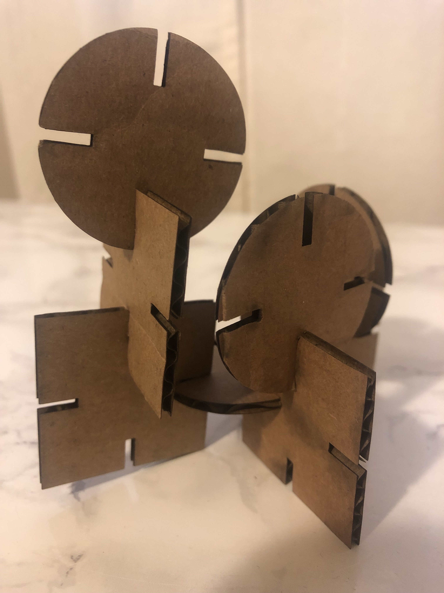
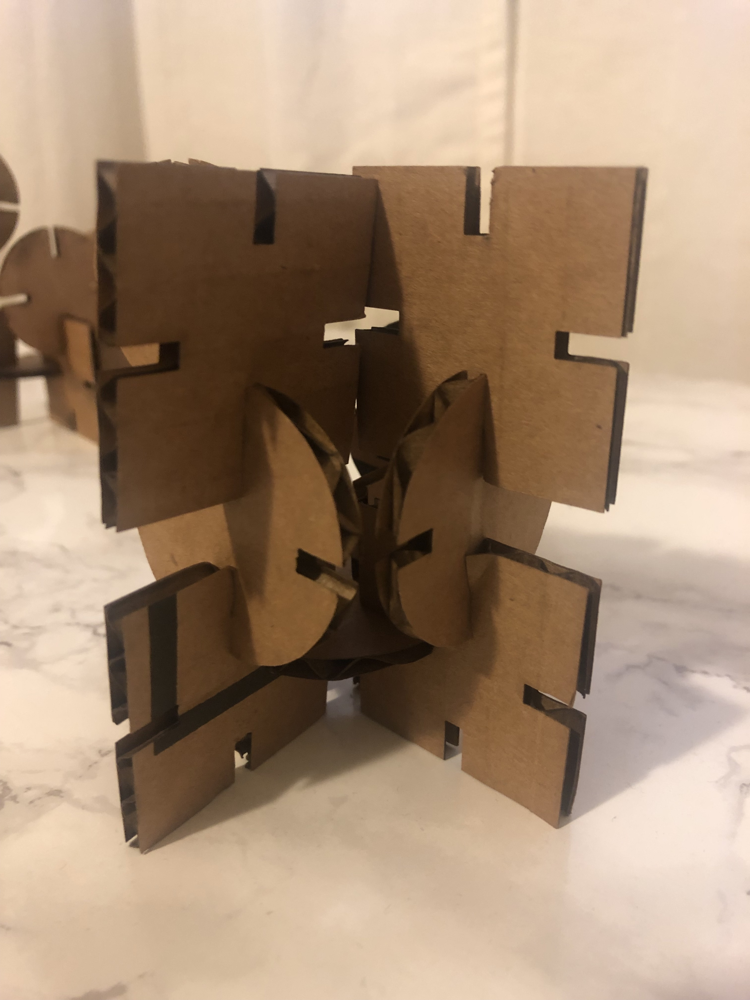
Source Files and Peer Attributions
Centering points on rectangles here
Grasshopper files for Square here
Grasshopper files for Circle here
Hannah and Dave for help in grasshopper